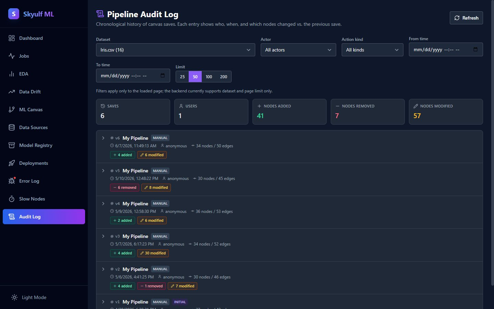

Build ML pipelines
you can trust
Design them visually on a canvas, or write them in plain Python. Skyulf keeps scikit-learn as the engine and adds what notebooks never gave you: reproducible artifacts, honest validation scores, and a path to production.
Self-hosted platform · Apache-2.0 Python library · your data stays on your machine
pip install skyulf-core


No signup and no install. The demo runs the real app in your browser. (Free instance, so the first load can take ~30s to wake.)

- built-in pipeline nodes
- 35
- workspaces, from EDA to audit log
- 11
- skyulf-core, use it anywhere
- Apache‑2.0
- on scikit-learn, pandas & Polars
- Python 3.12
One engine, two ways to drive it.
Prefer clicking or typing? Both produce the same kind of pipeline, and the canvas exports to a notebook whenever you want to drop back into code.
Skyulf Platform
Self-hosted workspace · AGPLv3
The full application: a node canvas, automated EDA, background training, experiment comparison, a model registry, deployment and monitoring, all running on your own machine or server.
- Drag, connect and configure 35 node types
- Training runs in the background while you keep working
- Export any pipeline to a runnable Jupyter notebook
$ docker compose up
skyulf-core
Standalone Python library · Apache-2.0
No server, no UI, no lock-in. A pip-installable library that gives your scripts and notebooks one consistent pipeline API over scikit-learn, with the leakage checks and artifacts built in.
- Works standalone in any notebook or script
- Accepts pandas or Polars frames directly
- Permissive license, so you can ship it inside your own product
See a runnable example
# Runs as-is: the dataset ships with scikit-learn.
from sklearn.datasets import load_breast_cancer
from skyulf import SkyulfPipeline
df = load_breast_cancer(as_frame=True).frame
# The pipeline is a dict, so you can version it, diff it in
# review, or build it in a loop.
pipeline = SkyulfPipeline({
"preprocessing": [
{"name": "split", "transformer": "TrainTestSplitter"},
{"name": "impute", "transformer": "SimpleImputer"},
{"name": "scale", "transformer": "StandardScaler"},
],
"modeling": {"type": "random_forest_classifier"},
})
# Empty list means no step is fitted on rows it will be tested on.
# Move the imputer above the splitter and it tells you so, by name.
print(pipeline.validate_leakage_safety())
# []
# Split, preprocess, train and score, in one call.
results = pipeline.fit(df, target_column="target")
print(results["modeling"]["splits"]["test"].metrics)
# {'roc_auc': 0.9954, 'f1': 0.9722, 'pr_auc': 0.9972, ...}
# One hash for data + steps + model, and one portable file.
print(pipeline.fingerprint())
# d767f4bd87ef71aa...
pipeline.save("tumour.pkl")From a raw file to a monitored model.
Every stage lives in one workspace, so nothing gets lost between a notebook, a spreadsheet of results and whatever is actually running in production.
Point it at a file and start working
Upload CSV, Excel, JSON or Parquet, or connect an S3-compatible bucket. Skyulf reads it with Polars, profiles the columns and keeps every version you load, so you can always tell which data produced which model.
- CSV, Excel, JSON, Parquet and S3-compatible storage
- Column types and quality issues detected on upload
- Dataset versions kept, so results stay traceable


Your model says 94%.
Production says 71%.
Usually nothing is broken. The score was just measured wrong, and nothing in a normal notebook tells you that.
The bug that doesn't raise an error
Fill missing values, scale a column or encode a category before you split into train and test, and those steps quietly learn from the test rows. Your validation score now includes answers it was supposed to be guessing. The code runs fine. The number just isn't real.
Skyulf checks the order of your pipeline and tells you in plain language, both on the canvas and in the library:
Step 0 ('SimpleImputer') is configured before the train/test split (step 1, 'TrainTestSplitter') and will fit its statistics on the full dataset including the test set — move it after the splitter.
Honest scores by construction
Every node is split into a part that learns and a part that applies. Learning only ever sees training data, and what it learned is saved as explicit parameters, so inference can never accidentally refit on new data.
Reproducible six months later
Each pipeline gets a fingerprint and an exportable model card. When someone asks which preprocessing produced a prediction, you answer with a record instead of a guess, and hand over a notebook that re-runs it.
Operations, not just training
Most visual ML tools stop at the model. Skyulf keeps going: drift reports, an error log that links to the failing node, slow-node profiling and an audit trail of every pipeline change.
vs. hand-written scikit-learn
Same estimators, none of the glue. You stop re-implementing split-transform-fit wiring for every project, and the ordering mistakes get caught for you.
vs. cloud AutoML
No upload, no per-prediction bill, no black box. You keep the data, you can read every step of the pipeline, and you can export it and walk away.
vs. other visual tools
The canvas isn't a dead end. It exports to a real notebook, and the same pipelines run from the Apache-2.0 library with no UI at all.
Everything else in the box
Shipped and documented, not on a roadmap.
Model registry
Versioned models with their artifacts and history, so you always know what is live.
Hyperparameter tuning
Grid, random and halving search built in; Optuna available as an optional extra with live trial output.
SHAP explanations
Optional explainability extra: see which features moved a prediction, globally or row by row.
Notebook export
Turn any pipeline into a runnable Jupyter notebook, compact or full, including a serving snippet.
Multi-branch pipelines
Split one canvas into independent paths and run them as parallel jobs to compare approaches.
Ensembles
Voting and stacking for classification and regression, with nested tuning of the base models.
Text & NLP nodes
TF-IDF, count and hashing vectorizers, tokenisation, and optional dense sentence embeddings.
Time-series & geo features
Lag and rolling windows, date parts, H3 indexing and distance features for spatial data.
Audit log
Every pipeline save recorded with what was added, removed or changed, and by whom.


Claims are cheap. Here is the evidence.
Every number here comes from the repository, and the counts are yours to re-run.
Tested where it matters
2,266 tests in the library, 1,089 in the backend and 661 in the canvas, plus browser tests that include an accessibility pass. Every pull request also runs lint, a type check, a JavaScript bundle-size budget and two Docker builds.
Drift is measured four ways
A shifted column is caught with the Kolmogorov-Smirnov test, Population Stability Index, Wasserstein distance and KL divergence, each with its own threshold, instead of one number that either fires or does not.
Say what your data must look like
Available expectations expect_columns_exist, expect_no_nulls, expect_value_range and expect_unique stop the run with a clear ExpectationError before a bad column reaches a model. There is no second data-quality tool to install.
Start from a working pipeline
Examples to give you idea is ready. Five templates drop a wired graph onto the canvas: Tabular Classification, Tabular Regression, Text Classification, Customer Segmentation and Ensemble Classification. You adjust instead of assemble.
Frequently Asked Questions
The questions people actually ask before trying it.
Skyulf is two things that share one engine: skyulf-core, a Python library that gives you a single pipeline API over scikit-learn, and a self-hosted workspace where you build that same pipeline on a canvas. It covers the parts a notebook leaves to you: ordering steps so the test set stays untouched, versioning every run, comparing experiments, serving a model and watching it drift.
I named it Skyulf after two ideas. Sky is the open space above Earth, where the sun, moon, stars, and clouds live. Ulf means “wolf,” with Nordic roots, and the wolf is also a strong symbol in Turkic tradition. Together it fits the project: independent and community-driven.
You can try the hosted demo first, with nothing to install. For real work you run it yourself with
docker compose up, which takes a few minutes and needs no account, no
credit card and no per-prediction bill. A useful side effect: because it runs on your machine or your
server, your data never has to leave it, which is what makes it usable in hospitals, banks and
anywhere else the data legally cannot go to a third party.
Cloud platforms require uploading your data to third-party servers and charge based on usage. Skyulf runs on your own hardware or inside your private cloud. No data leaves your network, no usage-based pricing, and no vendor dependencies. You own the infrastructure and the workflow.
It is perfect for internal tools, research, and experimentation. We are working towards a stable v1.0 for critical production workloads.
Yes. Skyulf is open source under a split license. skyulf-core, the Python library, is Apache 2.0, so you can use it in anything, including closed-source commercial products. The platform (backend and canvas) is AGPLv3, so improvements to the application itself are shared back.
Contributions are welcome. Start at GitHub. Whether it's code, documentation, bug reports, or feature ideas, every contribution helps shape Skyulf.
To democratize AI development. We are building an "App Hub" where anyone can drag-and-drop to create powerful AI tools, from traditional ML to GenAI agents, without needing a PhD or a cloud budget.
Building on skyulf-core (Apache 2.0) is free for any use, commercial included. The platform is AGPLv3: running it internally, unmodified, needs nothing from you, but offering a modified version as a public network service means publishing your source, or asking for a commercial exception.
Powered by modern open source
Ready to build?
Try the demo in your browser, or install the library and start from your next notebook.